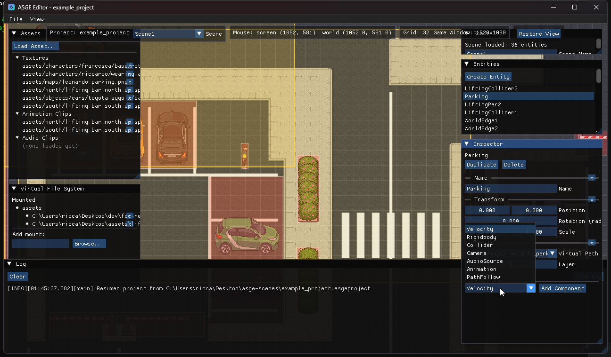

Add entities and components
Every entity in the active scene is listed on the right; click one, or click it in the viewport, to edit it live in the Inspector.

Steps
- Click Create Entity in the Entities panel (or Create UI Element, see Arrange the UI).
- Select it. The Inspector shows one collapsible section per component the entity has.
- Use Add Component to attach more. Edit fields directly: there is no intermediate copy and no Apply step.
- The trailing x on a section removes that component. Duplicate copies the entity with everything under it into the same parent; Delete removes just that entity and its children become roots.
Component types
A fixed, explicit set rather than generic reflection; each has a hand-written editor next to its Serializer<T>.
| Component | Fields |
|---|---|
| Name / Transform | Display name; position, rotation, scale. |
| Sprite | Virtual texture path (picked from known assets, not typed), layer, Y-sort. |
| Collider | Rect or circle shape, drawable on the viewport: Add a collider. |
| Camera | Zoom and follow-smoothing; previewed live in the viewport. |
| AudioSource | Clip path (picked from known audio), volume, loop. |
| Animation | Clip path, frame duration and a Play/Stop button. It starts stopped so nothing auto-plays when added. |
| PathFollow | Waypoints authored on the viewport: Make an entity follow a path. |
| Velocity / Rigidbody | Plain physics data: linear velocity, mass and drag. |
| RenderInfo | Layer, Y-sort, screen space and sort inheritance. Added automatically, once, whenever a Sprite is. |
| UI components | UIRect, UIButton, UILabel, UICheckbox, UISlider, UIPanel and UILayoutItem. |
Parent entities
The Entities panel is a tree: roots at the top level, children nested behind a collapsible arrow. A selected child shows a read-only Parent line. A child's transform is relative to its parent, so moving the parent moves everything under it.
| Action | How |
|---|---|
| New Child | Right-click a row: creates a new entity with just a Transform, attached under that row. |
| Detach | Right-click a child row to make it a root again (disabled on a root). |
| Remove | Right-click a row to destroy the entity and its whole subtree. |
| Reparent | Drag one row onto another to make it that entity's child. Dropping onto itself or its own descendant does nothing. |
Disable an entity
The Disabled checkbox at the top of the Inspector turns an entity off, along with everything under it. A child disabled only because of its parent shows an (inherited from parent) hint. A closed-eye icon marks a disabled row, and every ancestor of a disabled entity too, so it stays visible when its branch is collapsed. Disabled entities stop drawing collider, camera and waypoint overlays.
Unsaved changes
Every field edit, component add/remove, or duplicate/delete marks the scene dirty (the dot next to the Scene selector). Dragging a scalar does not re-resolve assets on each intermediate value, so it stays cheap. Adding a Sprite, or a component with an asset-path field (Animation, AudioSource), resolves it immediately, so a newly picked texture or clip shows up without changing selection.
Previous: Configure the game window · Next: Arrange the UI.